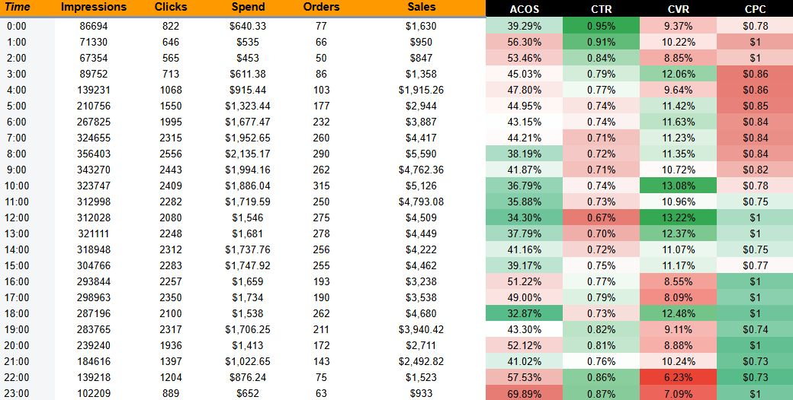
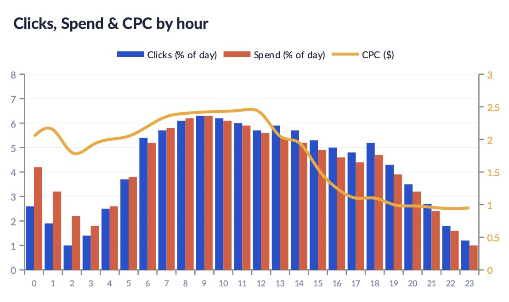

Amazon PPC / Statistical Dayparting
DayParting Case
How hourly PPC data exposed budget leakage, protected high-conversion traffic, and turned bid scheduling into an advertising capital-allocation system.
The account was not weak. The timing was inefficient.
The account was not fundamentally suffering from weak demand. It was suffering from inefficient timing. Profitable and unprofitable hours were being blended into the same daily ACoS, while budgets were being consumed before some of the strongest conversion windows.
I implemented a controlled dayparting structure using hourly performance data, time-of-day bid modifiers, campaign-level budget reallocation, and separate pacing logic for high-intent and low-intent periods. The objective was not simply to reduce spend. It was to improve the expected value of each additional advertising dollar.
Interpretation: These results come from one implemented account. The value of dayparting depends on traffic volume, conversion density, budget constraints, attribution lag, and the stability of hourly patterns.
The business problem hidden inside a daily average
A daily ACoS of 46.8% does not mean every hour produced a 46.8% ACoS. It can be a weighted average of several efficient periods and several periods of severe budget leakage.
The key analytical shift was to stop treating time as a descriptive reporting dimension and start treating it as a predictive variable. Hour of day, day of week, CPC, CVR, impression volume, placement mix, and budget exhaustion were analyzed jointly as components of a changing auction system.

Figure 1. Hourly performance matrix used to identify recurring high-efficiency and low-efficiency periods.
The account showed weaker conversion efficiency between approximately 00:00 and 05:00 and again late at night. Late morning and selected evening hours showed stronger conversion density and more favorable sales-to-spend ratios.
Why dayparting can improve PPC efficiency
Dayparting works when time of day contains predictive information that is not fully absorbed by Amazon's bidding system. This can happen because shopper intent changes, competitor budgets deplete unevenly, placement prices fluctuate, or the account's own budget caps create scarcity during later high-value periods.
Expected revenue per click = P(conversion | hour, query, placement) x Average order value Expected contribution per click = Expected revenue per click x Contribution margin - CPC
Figure 2. CPC did not move proportionally with click volume, creating periods where traffic remained available after auction costs declined.
From hourly reporting to budget allocation
The implementation was designed as a capital-allocation system, not a simple on/off schedule. Campaigns were segmented by strategic role, search intent, and sensitivity to budget caps.
| Time Window | Observed Pattern | Implemented Change | Strategic Rationale |
|---|---|---|---|
| 00:00-05:00 | Low CVR and elevated ACoS | Bid reduction | Limit budget leakage while preserving minimal auction continuity. |
| 06:00-09:00 | Moderate efficiency and rising auction pressure | Base pacing | Avoid overbidding while competitor budgets reset. |
| 10:00-14:00 | Highest recurring conversion density | Bid and budget increase | Capture qualified demand before budget exhaustion. |
| 15:00-18:00 | Declining CPC with viable traffic | Selective scaling | Exploit lower-cost inventory as competitors begin dropping out. |
| 19:00-23:00 | Mixed performance by campaign type | Segmented modifiers | Maintain strong campaigns while suppressing low-intent traffic. |
Hourly patterns were not constant across the week
Some weekdays had stronger baseline demand, while others exhibited similar spend but weaker sales productivity. The optimal schedule was therefore two-dimensional: hour-of-day effects interacted with day-of-week effects.

Figure 3. Day-of-week variation was layered over hourly pacing to avoid treating all daily schedules as equivalent.
Rather than applying one universal schedule, I used broader modifier bands for high-volume weekday patterns and more conservative adjustments for lower-volume days.
Before-and-after efficiency curve
The chart below illustrates the strategic effect of the intervention. Spend was reduced during lower-return periods and redistributed toward hours with a stronger expected sales response.
The ACoS reduction did not come from indiscriminately cutting traffic. Ad sales increased because the account purchased a better mix of clicks: fewer low-probability clicks during weak windows and more exposure during hours with stronger expected revenue per click.
Dayparting is dynamic portfolio allocation
This case shows how Amazon PPC management can be improved by combining advertising operations with statistical reasoning. The central problem was not simply excessive CPC or insufficient conversion. It was the mismatch between when the account spent money and when that money had the highest expected return.
Dayparting is therefore best understood not as a scheduling trick, but as a form of dynamic portfolio allocation. Each hour represents a different expected distribution of cost, conversion probability, and available demand.